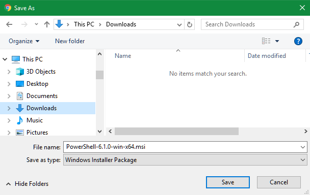
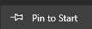
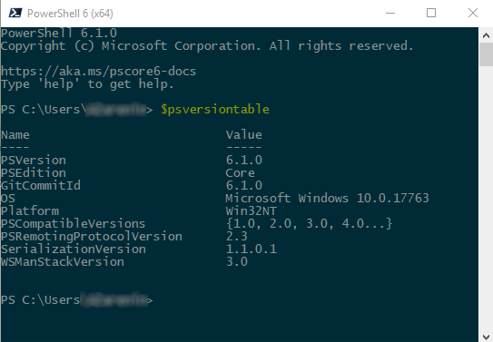
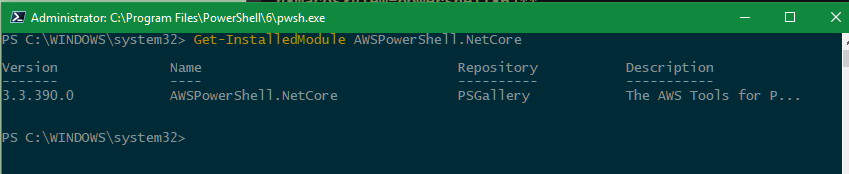
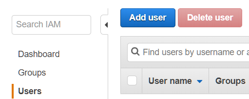
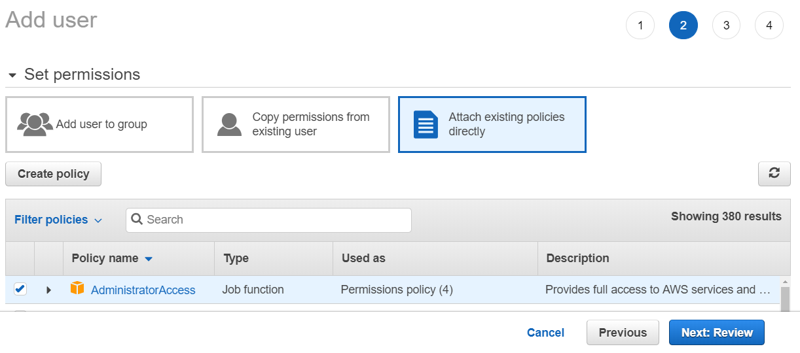
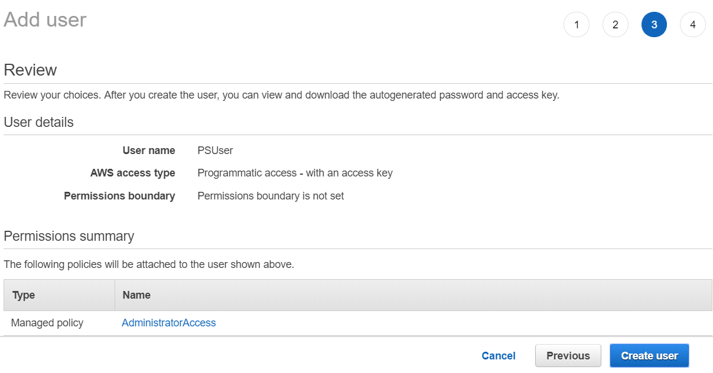
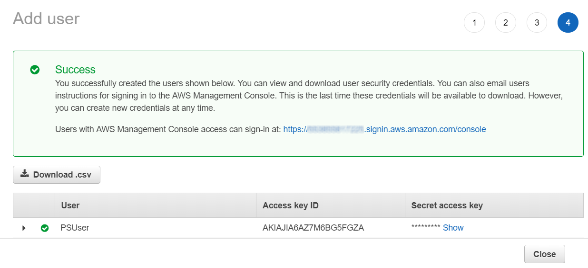
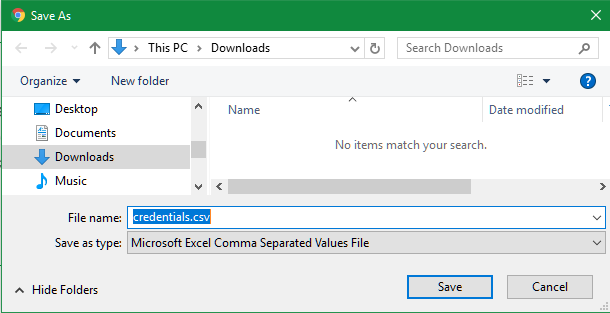

Requirements
For this session you will need a laptop with Remote Desktop Services client. If you are running Windows, you will already have one installed, but if you are on a Mac, you will need to install a client. You can download the Microsoft Remote Desktop Services client by clicking here (or navigate to https://itunes.apple.com/us/app/microsoft-remote-desktop-10/id1295203466).
Downloading and installing PowerShell Core
AWS Tools for Powershell Core depend on presence of Powershell Core on the machine. PowerShell Core is a distinct set of tools and components that is shipped, installed, and configured separately from Windows PowerShell and does not come pre-installed. Thus the first thing we need to do is to Install Powershell Core.
- To install PowerShell on a Windows client or Windows Server (works on Windows 7 SP1, Server 2008 R2, and later), download the MSI package from Microsoft GitHub releases page (or navigate to URL https://github.com/PowerShell/PowerShell/releases/download/v6.1.0/PowerShell-6.1.0-win-x64.msi). The Save As dialog will pop-up - navigate to some folder (usually, Downloads) And click Save button:

- Navigate to the downloaded MSI file, right-click the
PowerShell-6.1.0-win-x64.msifile and selectInstallfrom the context menu. ClickNextin the Powershell setup dialog:

and proceed with the installation.
-
Following successful installation, a new icon will appear in the
Windowsmenu - righ-click this icon and select  -
If you have Mac laptop, please follow installation instructions at this link
To verify Powershell Core installation, click on the button and in the command window enter the following command: $psversiontable - if installation is successful, you should get the following reply in the window:

Installing AWS Tools for Powershell Core
To install open Powershell Core console in Administrative mode (right-click PowershAWS Tools for Powershell Coreell Core icon and select Run as Administrator from the context menu) and execute the following script
Start your powershell as Administrator.
MacOS and Linux don't support
Set-ExecutionPolicycmdlet, they run "unrestricted" by default, so please ignore respective line in the script below
Set-ExecutionPolicy Bypass -Scope Process -Force Set-PSRepository PSGallery -InstallationPolicy Trusted Install-Module -Name AWSPowerShell.NetCore
To verify installation of AWS Powwershel Core, run the following command
Get-InstalledModule AWSPowerShell.NetCore
If installation is successful, you will see the following screen:

Configuring credentials for AWS Tools for Powershell Core
All AWSPowerShell.NetCore cmdlets accept AWS Access and Secret keys or the names of credential profiles when they run. When running on Windows, AWSPowerShell.NetCore module have access to the AWS SDK for .NET credential store file (stored per-user in AppDataLocalAWSToolkitRegisteredAccounts.json file). This file stores credentials in encrypted format by using Windows crypto APIs and cannot be used on a different machine. This file is the first to be inspected by the AWSPowerShell.NetCore module when looking for a credential profile, and is also where it stores new credential profiles.
As Windows crypto API is not available on other platforms, a different mechanism for managing AWSPowerShell.NetCore credentials is used on MAC and Unix platforms. For details on how to set up credentials for AWSPowerShell.NetCore module on other platforms please check this link
To obtain AWS Access and Secret keys to establish AWSPowerShell.NetCore credentials, you will have to connect to AWS account and create a user that will provide credentials for AWSPowerShell.NetCore module.
For this session, we have provisioned an AWS account, which you will be using to create various AWS resources using AWS Tools for Powershell Core. You will have been handed account details by the Builder Session staff; this information contains an AWS account ID, as well as a username and password to connect to the account. Locate this information; if you do not have this information, indicate to the event staff that you need assistance.
-
Navigate your Web browser to https://console.aws.amazon.com. If you have an existing account, you will need to log out of this account.
-
In the “Sign in” dialog that appears, enter the account ID and click Next

-
You will then be prompted for an IAM user name and password. Enter this information and click “Sign In.”

-
In the AWS console navigate to Identity and Access Management (IAM) service:

-
In the IAM Console select
Usersand then clickAdd user
-
Enter user name (e.g.
PSUser), check the checkbox near theProgrammatic access, and then clickNext: Permissionsbutton:
-
On the next screen select
Attach existing policies directly, check the checkbox next toAdministratorAccesspolicy (NOTE: In real life you should select or configure policies specific to the tasks that this user will be allowed to perform, but for this Builder session we will not go into these details), and then clickNext: Reviewbutton:
-
Review your settings and click
Create Userbutton:
-
It is very important that on the following screen you click
Download .csvbutton - this is your only chance to view or saveAccess key IDandSecret access keyfor just created user:
-
In the pop-up dialog navigate to some folder (e.g.
Downloads) and clickSavebutton:
Setup AWS Powershell environment
Import Powershell Core into your session
Through the rest of the session you will be working with AWS cmdlets; to make them available, they need to be imported into your Powershell session using the following command:
Import-Module AWSPowerShell.NetCore
Set AWS Credentials on your Powershell console. Insert your own AccessKey and SecretKey
The .csv file downloaded in step 10 above contains Access key ID and Secret access key that will be used to provide credentials for AWSPowerShell.NetCore module. Open this file and copy your Access key ID and Secret access key into the following script:
Set-AWSCredential -AccessKey <access-key> -SecretKey <secret-key> -StoreAs default
After you execute this script, your credentials will be saved as default AWS Powershell Core credentials and can be used in subsequent scripts.
Set Profile, Region and Execution Policy
Initialize-AWSDefaults -region us-west-2 Set-DefaultAWSRegion -Region us-west-2